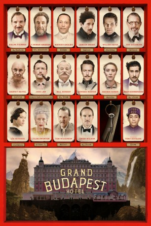

Auszeichnungen: 4 Oscars gewonnen für 5 Oscars nominiert 1 GoldenGlobes gewonnen 5 BAFTA-Awards gewonnen
 gesehen am 27.08.2015
gesehen am 27.08.2015Alternativ: The Grand Budapest Hotel
Auszeichnungen: 4 Oscars gewonnen für 5 Oscars nominiert 1 GoldenGlobes gewonnen 5 BAFTA-Awards gewonnen gesehen am 27.08.2015
 
 IMDB-Wertung: 8.1 / 10
IMDB-Wertung: 8.1 / 10  IMDB-TOP-Platzierung: 186
IMDB-TOP-Platzierung: 186  Metascore:
Metascore: 
Gustave H. ist der legendäre Concierge eines Luxushotels in Europa. In den 20er Jahren des 20. Jahrhunderts baut er eine enge Freundschaft zu einem jungen Hotelangestellten namens Zero Moustafa auf, der mit der Zeit sein engster Vertrauter und Protégé wird. In der Zwischenzeit geht in dem Hotel ein atemberaubender Kunstdiebstahl vonstatten, bei dem ein unschätzbar wertvolles Gemälde aus der Renaissance entwendet wird, Leute werden des Mordes an Madame D. beschuldigt und Gustave H. ist in den Kampf um ein Familienerbe verwickelt, während in Europa langsam die ersten Anzeichen eines drohenden Krieges nicht mehr zu übersehen sind. Außerdem machen noch das Konkurrenzhotel des Grand Budapest - das Excelsior's Palace - und dessen Manager M. Ivan Probleme...
Jahr: 2014
Dauer: 99 Minuten
FSK: 12
Land: USA Studio: Fox Searchlight PicturesTonspuren: DTS - ,
Untertitel: Deutsch,
Auflösung: 1080p (1920x1040) Größe: 6389 MB
Genre: Abenteuer, Komödie, Drama
Regisseur:  Wes Anderson
Wes Anderson
Drehbuch: Stefan Zweig, Wes Anderson, Wes Anderson, Hugo Guinness
Soundtrack: Alexandre Desplat
Darsteller:
 Ralph Fiennes als M. Gustave
Ralph Fiennes als M. Gustave F. Murray Abraham als Mr. Moustafa
F. Murray Abraham als Mr. Moustafa Mathieu Amalric als Serge X.
Mathieu Amalric als Serge X. Adrien Brody als Dmitri
Adrien Brody als Dmitri Willem Dafoe als Jopling
Willem Dafoe als Jopling Jeff Goldblum als Deputy Kovacs
Jeff Goldblum als Deputy Kovacs Harvey Keitel als Ludwig
Harvey Keitel als Ludwig Jude Law als Young Writer
Jude Law als Young Writer Bill Murray als M. Ivan
Bill Murray als M. Ivan Edward Norton als Henckels
Edward Norton als Henckels Saoirse Ronan als Agatha
Saoirse Ronan als Agatha Jason Schwartzman als M. Jean
Jason Schwartzman als M. Jean Léa Seydoux als Clotilde
Léa Seydoux als Clotilde Tilda Swinton als Madame D.
Tilda Swinton als Madame D. Tom Wilkinson als Author
Tom Wilkinson als Author Owen Wilson als M. Chuck
Owen Wilson als M. Chuck Tony Revolori als Zero
Tony Revolori als Zero Larry Pine als Mr. Mosher
Larry Pine als Mr. Mosher Giselda Volodi als Serge's Sister
Giselda Volodi als Serge's Sister Florian Lukas als Pinky
Florian Lukas als Pinky Karl Markovics als Wolf
Karl Markovics als Wolf Volker Michalowski als Günther
Volker Michalowski als Günther Neal Huff als Lieutenant
Neal Huff als Lieutenant Bob Balaban als M. Martin
Bob Balaban als M. Martin Fisher Stevens als M. Robin
Fisher Stevens als M. Robin Wallace Wolodarsky als M. Georges
Wallace Wolodarsky als M. Georges Waris Ahluwalia als M. Dino
Waris Ahluwalia als M. Dino Milton Welsh als Franz
Milton Welsh als Franz Michaela Caspar als Marguerite
Michaela Caspar als Marguerite Heike Hanold-Lynch als Carolina
Heike Hanold-Lynch als Carolina Matthias Matschke als Prison Guard
Matthias Matschke als Prison Guard Lucas Hedges als Pump Attendant
Lucas Hedges als Pump Attendant Gabriel Rush als Otto
Gabriel Rush als Otto Hannes Wegener als Soldier
Hannes Wegener als Soldier Marko Dyrlich als Zig-Zag
Marko Dyrlich als Zig-ZagDatei: X:\2014(G-M)\Grand Budapest Hotel (2014, FSK12, 1920x1040).mkv seit 25.02.2015
Festplatte: HD 2013(I-Z)-2014(A-Z)
 Es gibt insgesamt 136 Filme in der Gruppe '2014(G-M)'
Es gibt insgesamt 136 Filme in der Gruppe '2014(G-M)'